1. Começando
Instalar, entrar na sua conta e escolher a aparência.
1.1 Instalar e atualizar o programa
▶ Assistir ao vídeoO programa é instalado no Windows uma vez. Depois ele se atualiza sozinho.
- 1
Abra o arquivo LottoAnalytics-Setup que você recebeu e siga a instalação. Ao terminar, abra o programa pelo ícone.
- 2
Quando existe versão nova, o programa baixa em segundo plano e mostra o aviso "Atualização vX.Y.Z pronta para instalar". Clique em Instalar e Reiniciar.
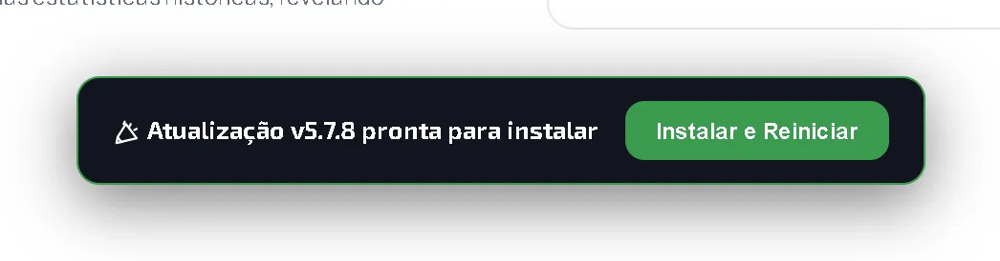
Aviso de atualização pronta. - 3
O programa fecha, instala e abre de novo. Na primeira abertura aparece Novidades da versão; clique em Continuar.

Novidades da versão.
Quer saber mais?
O programa procura versão nova ao abrir e depois a cada 30 minutos. Você não precisa baixar nada à mão.
1.2 Entrar na sua conta
▶ Assistir ao vídeoPara ver o seu bolão, entre com o mesmo e-mail e a mesma senha que você usa no aplicativo do celular.
- 1
Ao abrir, o programa mostra o Painel Inicial, aberto a todos. Para entrar, clique em Já tenho conta.
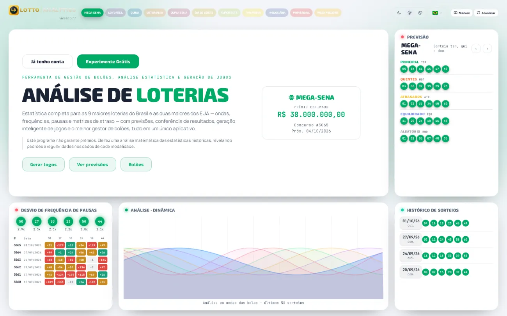
Painel Inicial sem login. - 2
Escreva o e-mail e a senha e clique em Entrar.
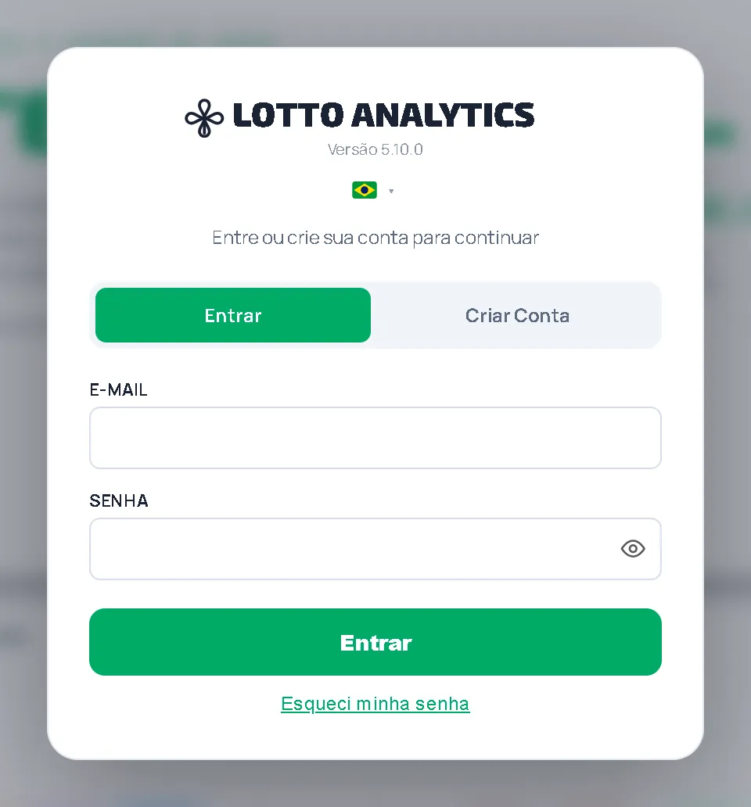
Janela de login. - 3
Esqueceu a senha? Clique em Esqueci minha senha.
- 4
Como a sua conta é de participante, o programa abre direto a sua área: os seus bolões.
A sua área de participante.
Quer saber mais?
Quem organiza bolões e participa de outros vê também um botão Organizador no alto da área, para trocar de lado.
1.3 Tema (claro, escuro, colorido) e idioma
▶ Assistir ao vídeoTroque a aparência quando quiser. Isso não muda nenhum dado.
- 1
No Painel Inicial, ao lado das loterias, ficam três botões: lua (tema escuro), sol (tema claro) e paleta (tema colorido).
Botões de tema. - 2
Ao lado dos temas fica a bandeira. Clique nela e escolha o idioma: Português, English, Español ou Italiano.
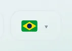
Seletor de idioma.
Quer saber mais?
O programa lembra a sua escolha na próxima vez que abrir.
2. Seus bolões
A tela principal: tudo sobre cada bolão em que você participa.
2.2 Os prêmios das loterias
▶ Assistir ao vídeoLogo abaixo do menu, uma faixa mostra o prêmio estimado do próximo sorteio de cada loteria.
- 1
Cada cartãozinho mostra o nome da loteria e o prêmio estimado. A cor é a da loteria.

Faixa de prêmios estimados. - 2
Clique num cartãozinho para ver o último resultado daquela loteria.
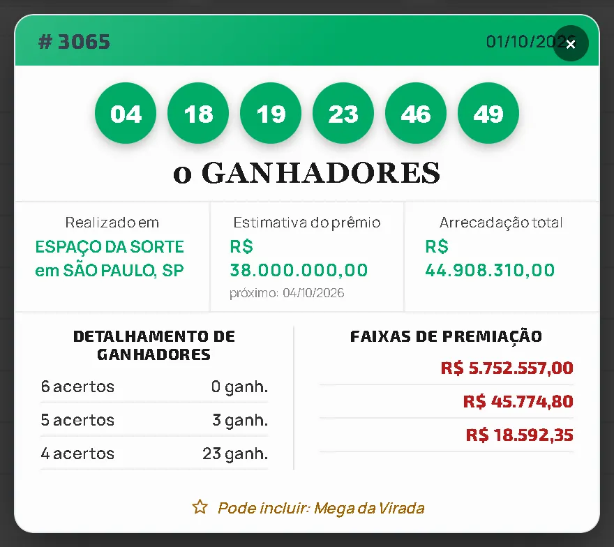
Último resultado da loteria. - 3
Para fechar, clique no ✕ no canto da janela.
2.3 A lista dos seus bolões
▶ Assistir ao vídeoÀ esquerda ficam todos os bolões em que você participa.
- 1
Os botões Ativos e Inativos separam os bolões. Ativos são os que estão valendo agora.
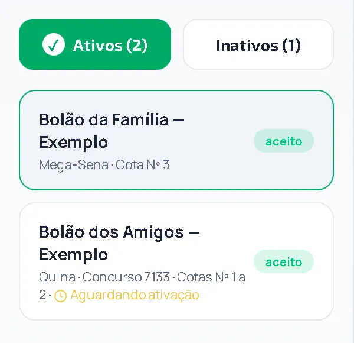
Lista de bolões ativos. - 2
Cada bolão mostra o nome, a loteria, o número das suas cotas e a situação. "Aguardando ativação" quer dizer que o organizador ainda não ativou o bolão.
- 3
Clique em Inativos para ver os bolões que já terminaram.
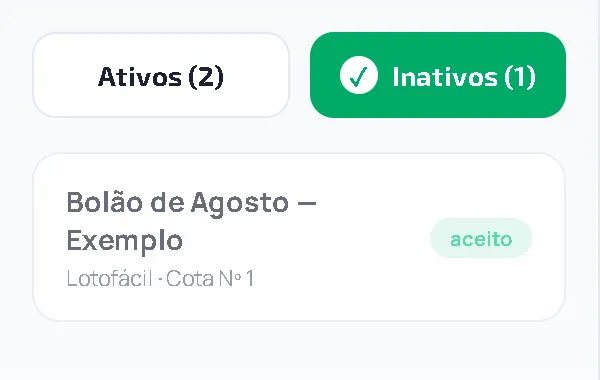
Lista de bolões inativos. - 4
Clique num bolão para ver os detalhes dele ao lado.
Quer saber mais?
A palavra aceito significa que você aceitou o convite e já faz parte do bolão.
2.4 O resumo do seu bolão
▶ Assistir ao vídeoO primeiro cartão do bolão escolhido tem os seus números.
- 1
Leia, linha por linha: Sua cota (o número da sua cota), Cotas (quantas você tem), Valor da cota, % do bolão (a sua parte) e Pagamento (Pago ou Pendente).
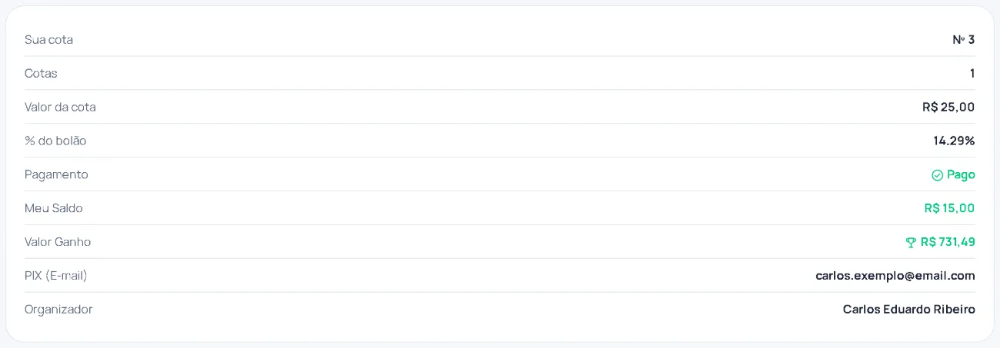
Resumo do bolão. - 2
Meu saldo é o dinheiro seu que ficou no bolão. Valor ganho é o total de prêmios que já são seus.
- 3
Por fim, o PIX do organizador (para onde você paga) e o nome do Organizador.
Quer saber mais?
Sua parte no bolão é proporcional às cotas: quem tem mais cotas paga mais e recebe mais.
2.5 Comprovante de pagamento e bilhetes
▶ Assistir ao vídeoAbaixo do resumo ficam os seus comprovantes e as fotos dos bilhetes do bolão.
- 1
Em Comprovante de pagamento aparece o PIX que você enviou, com o valor, para quem foi, a data e Concluído quando o organizador confirmou. O link Enviar comprovante do PIX serve para mandar outro.
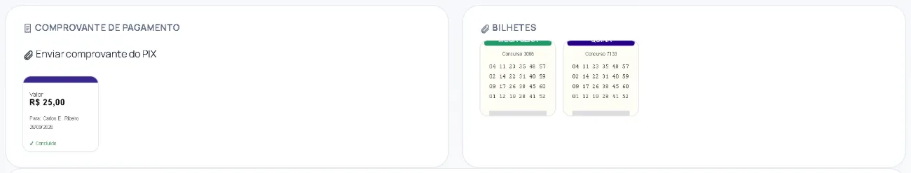
Comprovante de pagamento e bilhetes. - 2
Em Bilhetes ficam as fotos dos bilhetes que o organizador registrou na lotérica.
2.6 Documentos do bolão
▶ Assistir ao vídeoOs documentos do bolão ficam sempre à mão.
- 1
No cartão Documentos, clique no que quiser ler ou imprimir: Termos e Condições, Termo de Constituição do Bolão, Dossiê do Prêmio e Regras de Funcionamento e Isenção do ITCMD.
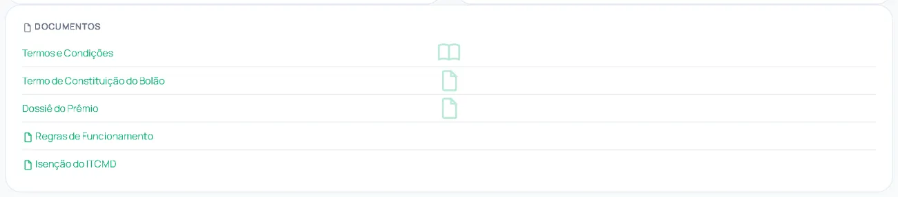
Documentos do bolão.
Quer saber mais?
O Termo de Constituição mostra as cotas de cada participante. Se você já assinou pelo celular, a assinatura aparece nele.
2.7 Os jogos do bolão e quanto você ganharia
▶ Assistir ao vídeoPara cada loteria do bolão há um cartão com uma estimativa e os jogos.
- 1
No alto do cartão, "Se ganhar na Mega-Sena hoje" mostra a sua parte estimada, se o bolão fosse o único ganhador do prêmio. É só uma estimativa: só se sabe o valor real depois do sorteio.
Jogos do bolão e a sua parte estimada. - 2
Embaixo, os jogos: cada linha é um jogo, com as bolinhas das dezenas. Os botões Todos e Premiados filtram a lista.
- 3
Clique em Concursos finalizados para ver os jogos de sorteios que já aconteceram.
Quer saber mais?
Os jogos que ganharam aparecem destacados, com o valor do prêmio.
3. Avisos, relatórios e histórico
Acompanhe o que aconteceu no seu bolão.
3.1 Avisos
▶ Assistir ao vídeoA aba Avisos lista tudo que o programa quis lhe dizer.
- 1
Clique em Avisos. Cada linha é um aviso, com a data e a hora: pagamento confirmado, bolão premiado, resultado disponível, crédito no seu saldo.
Aba Avisos.
3.2 Relatórios
▶ Assistir ao vídeoA aba Relatórios mostra o resultado de cada sorteio para o seu bolão.
- 1
Clique em Relatórios. No alto, os bolões premiados, com a sua cota, o seu valor líquido, a % da sua cota e o valor da cota.
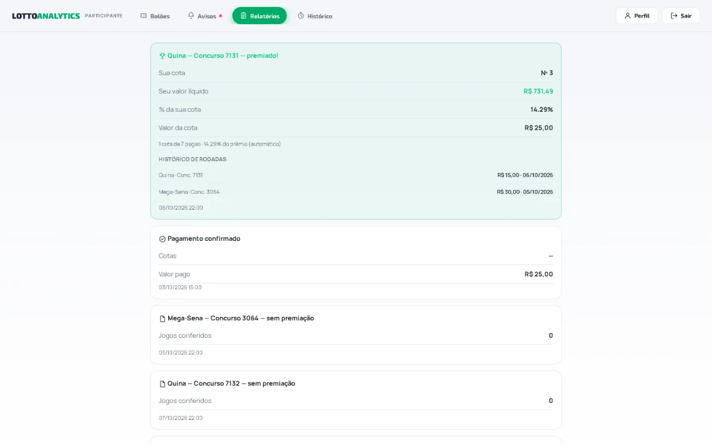
Aba Relatórios. - 2
O Histórico de rodadas lista cada sorteio do prêmio e quanto foi.
- 3
Abaixo, os sorteios sem prêmio e as confirmações de pagamento, em ordem de data.
3.3 Histórico
▶ Assistir ao vídeoA aba Histórico guarda tudo sobre as suas participações, inclusive de bolões antigos.
- 1
Clique em Histórico. Cada participação mostra o bolão, se está Pago, as cotas e o valor ganho.
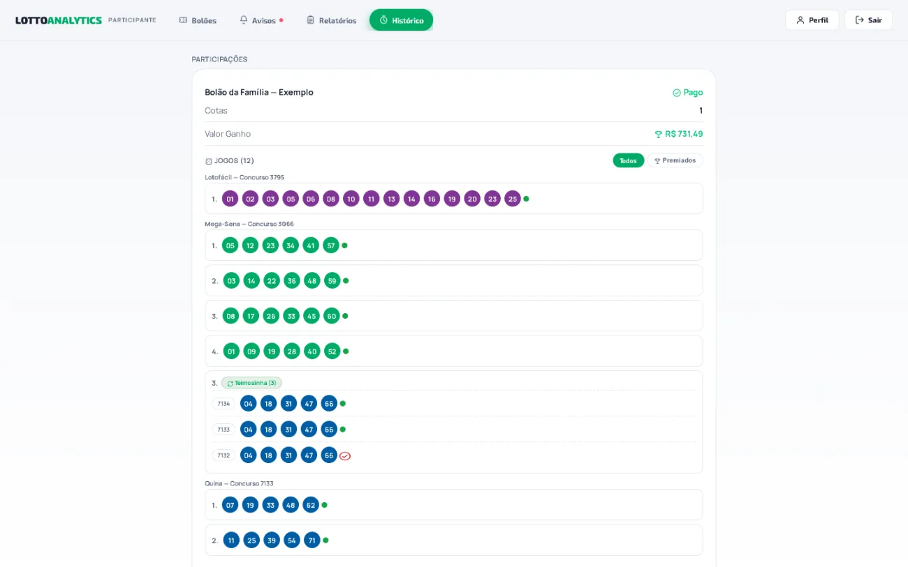
Aba Histórico. - 2
Abaixo vêm todos os jogos, por loteria e concurso. Use Todos e Premiados para filtrar.
- 3
Um jogo repetido em vários sorteios aparece como Teimosinha, com um número para cada concurso. A bolinha verde quer dizer que o concurso ainda vai acontecer; o visto vermelho, que já terminou.
4. Seu perfil
Foto, CPF, PIX e comprovantes.
4.1 Foto, CPF e PIX
▶ Assistir ao vídeoClique em Perfil, no alto à direita.
- 1
Para pôr uma foto, clique em Adicionar foto (depois, Trocar foto) e escolha uma imagem.
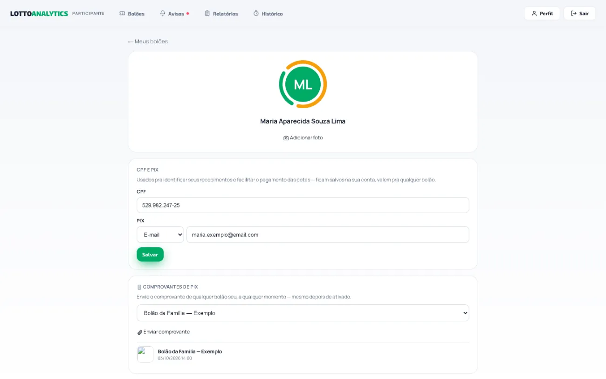
Perfil. - 2
Em CPF e PIX, escreva o seu CPF e escolha o tipo da chave PIX (CPF, CNPJ, telefone, e-mail ou aleatória). Escreva a chave e clique em Salvar.
- 3
Para voltar à lista de bolões, clique em ← Meus bolões.
Quer saber mais?
O CPF e o PIX servem para identificar os seus recebimentos e facilitar o pagamento das cotas. Ficam salvos na sua conta e valem para qualquer bolão.
4.2 Enviar um comprovante de PIX
▶ Assistir ao vídeoPagou uma cota? Envie o comprovante por aqui.
- 1
Em Perfil, na parte Comprovantes de PIX, escolha o bolão.
- 2
Clique em Enviar comprovante e escolha o arquivo (foto ou PDF).
- 3
O comprovante aparece na lista, com a data. O organizador o confere.
Quer saber mais?
Dá para enviar o comprovante de qualquer dos seus bolões, a qualquer hora, mesmo depois de o bolão ter sido ativado.
4.3 Sair do programa
▶ Assistir ao vídeoTerminou? Saia da conta.
- 1
Clique em Sair, no alto à direita. Você volta ao Painel Inicial.
Perguntas frequentes
O programa atualiza sozinho?
Sim. Ele procura versão nova ao abrir e a cada 30 minutos, baixa em segundo plano e mostra Instalar e Reiniciar.
Preciso de uma conta diferente no computador?
Não. É a mesma conta do aplicativo do celular: o mesmo e-mail e a mesma senha.
Onde me cadastro?
No aplicativo do celular, pelo convite que o organizador manda. Veja o Manual do Participante (celular).
Não vejo o meu bolão na lista.
Confira em Inativos: ele pode já ter terminado. Se o bolão é novo, o organizador precisa ter te convidado e você precisa ter aceitado o convite.
O que quer dizer "Aguardando ativação"?
O organizador ainda não ativou o bolão. Quando ativar, ele passa a valer e você recebe um aviso.
O valor de "Se ganhar hoje" é garantido?
Não. É só uma estimativa da sua parte, se o bolão fosse o único ganhador. O valor real só se sabe depois do sorteio.
Como envio o comprovante do PIX?
Em Perfil → Comprovantes de PIX: escolha o bolão e clique em Enviar comprovante. Também há o link Enviar comprovante do PIX dentro do bolão.
Posso mudar as minhas cotas por aqui?
Neste programa você acompanha as cotas. Para pedir mais cotas ou menos, fale com o organizador.
Glossário — as palavras do app
- Bolão
- Um grupo de pessoas que divide o custo das apostas e o prêmio.
- Cota
- A sua parte no bolão. Quem tem mais cotas paga mais e recebe mais.
- Organizador
- A pessoa que cuida do bolão: reúne o grupo, recebe os pagamentos, faz as apostas e divide o prêmio.
- Concurso
- Cada sorteio da loteria tem um número. É esse número que identifica o sorteio.
- Dezena
- Cada número de um jogo.
- Teimosinha
- O mesmo jogo repetido por vários concursos seguidos.
- Meu saldo
- O dinheiro seu que ficou guardado no bolão.
- Valor ganho
- O total de prêmios que já são seus.
- PIX
- A forma de pagamento usada para pagar a cota e receber prêmios.
- Ativar o bolão
- Quando o organizador fecha o bolão para novos participantes e ele passa a valer.
- ITCMD
- Imposto estadual sobre doações e heranças. O documento "Isenção do ITCMD" explica por que a divisão do prêmio entre os participantes não é doação.